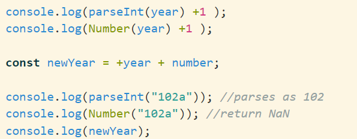
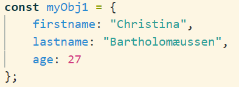
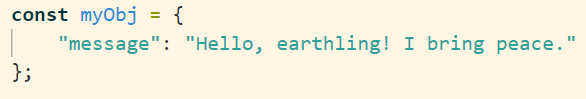

Variabler
I JavaScript er der 3 typer varibaler
- const: bør oftest bruges, da den ikke kan ændres efterfølgende
- let: bør bruges, hvis noget ændrer sig efterfølgende fx. hvis man erklærer et array. Man kan
dog ikke ændre typen.
- var: JUST DON'T
Hvad er forskellen på Number og parseInt?
Når man bruger Number er man mere eksisterende på, at det her, det er et nummer. Hvis man
derimod bruger parseInt forsøger JavaScript så godt som muligt at lave det til et nummer.
Alt efter, hvad man bør bruge afhænger af situationen.

JSON vs. JavaScript objekter
JSON og JavaScript objekter minder meget om hinanden. De skrives dog på hver sin måde.
JavaScript objekt:

JSON objekt:
